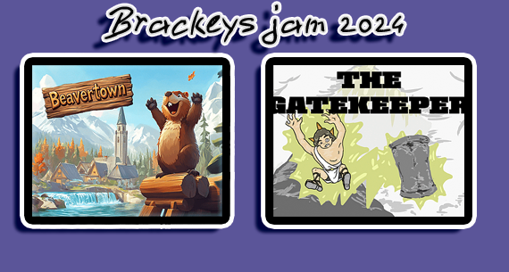
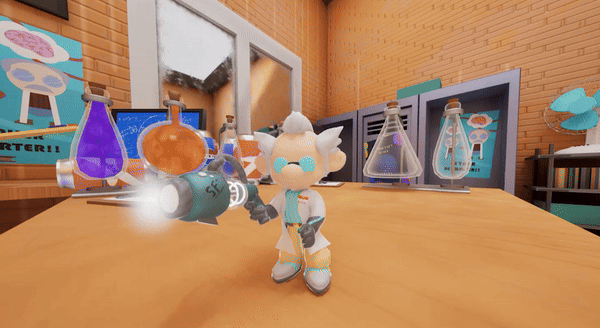
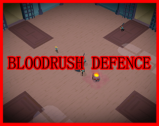
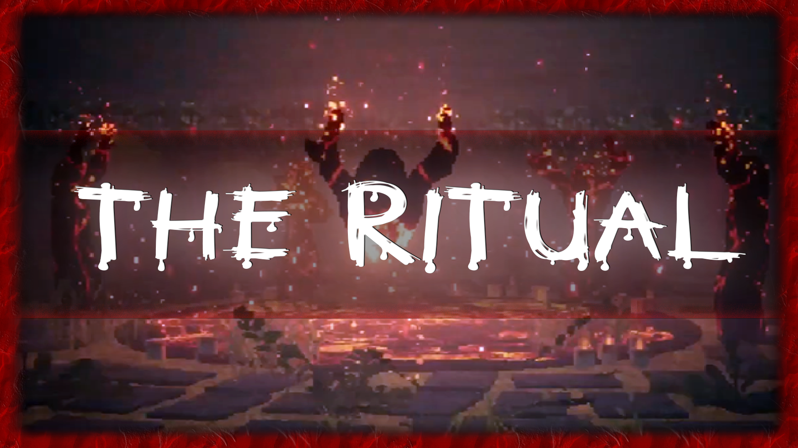
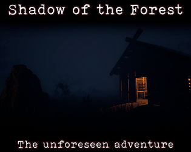

The Mirror Game | Personal Project | 2024
Something more high production value with made in Unity with a few friends(Testing 3D LUT's in the GIF)

Brackeys 2024 Game Jam | Personal Project | 2024
This time I decided to do two game jams at the same time. I cleared my whole week for this event, but it wasn't enough, to be honest I tried to carry one of the teams, but It wasn't enough. I'm never doing two again, since that the likelyhood of key people going missing is higher

GMTK 2024 Game Jam | Personal Project | 2024
I just love doing these you know, Its the game dev journey condensed into a week, hard work, but it pays off. There were over 7000 games!!! we it to around rank 1300, which is impressive, but I hoped for something closer to top 100, I guess better luck next time :D

Jame Gam #39 2024 | Personal Project | 2024
More jams! This time there was only 48 hours time to do this, I couldn't have done it without my friend

Easter Jam 2024 | Personal Project | 2024
Another gamejam! This time with a more pixelated ps1:ish art style.

ScreamJam2023 | Personal Project | 2023
Now I'm starting to make my own games as well, might as well now that I know how to use Unreal to an acceptable level, not a solo endevour, doing it with one friend, just to test the waters of making a small indie game

Crystal Ball Critters | No Bright Shadows | 2022-
Now it's getting serious. At around 2022 I joined NBS, which gave me a better idea of working on bigger projects with more people. As to what I do? Well It's mostly the whole Modeling pipeline excluding creating the concept, but basically from nothing to a rigged alive thing(unless its a prop) Otherwise it's stuff like general VFX and game mechanic programming.

dr_undertale | TF2 Mapping | 2018-2020
I made in total 2 deathrun maps, this was the second one that actually survived development hell. I learned that it's just safer to release something which is not ready, then polish it afterwards instead of stressing over making something "perfect".

dr_r60d | TF2 Mapping | 2017-2019
It started around here, not my first map, but my first public map.